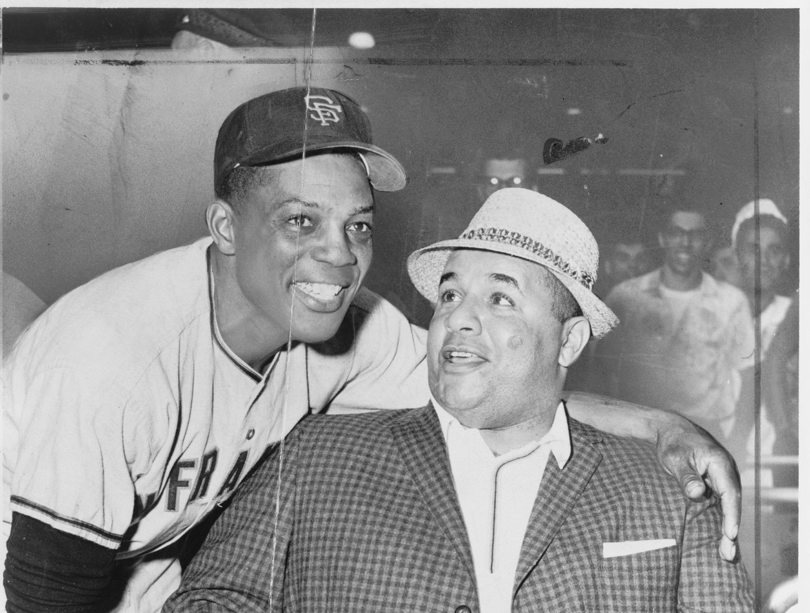
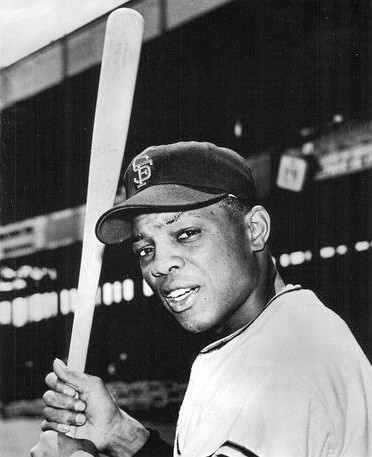
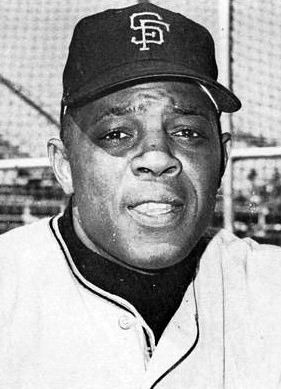
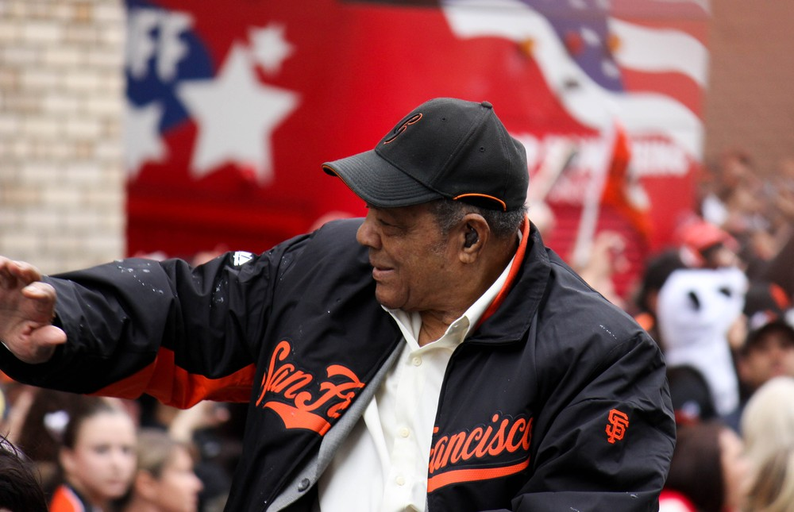

Willie Mays
Four homers in Milwaukee, 52 in the Candlestick wind, a hat flying off around third. The greatest Giant there ever was.
The Willie Mays Story
There's a reason old Giants fans don't argue about this one. You can fight all day about Bonds and McCovey and Marichal and who goes second. First is settled. Willie Mays came west with the team in 1958, played 15 seasons in San Francisco, and for most of them he was the best baseball player on the planet. Our team. Our center fielder. We got to watch him every day.
He was born Willie Howard Mays Jr. on May 6, 1931, in Westfield, Alabama, outside Birmingham. His father, Cat, played ball for the steel mill team, and his mother, Annie, was a high school basketball and track star. At 16 he was already playing for the Birmingham Black Barons of the Negro American League, the youngest man on the club, and as a 17 year old he played in the 1948 Negro League World Series against the Homestead Grays. Buck Leonard said the kid could run and throw but couldn't hit a curveball yet. That part didn't last.
The New York Giants signed him in 1950 for a $4,000 bonus and sent him to Trenton, where he was the first Black player in the Interstate League. By May 1951 he was hitting .477 for Minneapolis and Leo Durocher wanted him badly enough to call the kid at a movie theater. Mays told him he didn't think he could hit big league pitching. Durocher asked if he could hit .250. He went 0 for 12 to start, then got his first big league hit, a homer onto the Polo Grounds roof off Warren Spahn, slumped again, and cried at his locker until Leo told him he was his center fielder no matter what. He won Rookie of the Year and was kneeling on deck when Bobby Thomson hit the Shot Heard Round the World.
The Army took most of 1952 and all of 1953. He came back in 1954 and won the batting title at .345 on the final day of the season, hit 41 homers, led the league in triples and slugging, and won the MVP at 23. Then in Game 1 of the World Series at the Polo Grounds he ran down Vic Wertz's drive to the deepest part of center with his back to the plate, spun and fired it back in. The Giants swept Cleveland, a team that had won 111 games. It's still the most famous catch in the history of the sport.
He hit 51 homers in 1955, led the league in steals four straight years starting in 1956, and won the very first Gold Glove in 1957. Then the Giants packed up and moved to San Francisco, and I'll be honest about what happened next because it's part of the story. The city didn't hug him right away. A home sale fell through because neighbors objected, somebody threw a brick through his window, and one New York writer cracked that San Francisco cheered Khrushchev and booed Mays. Fans voted rookie Orlando Cepeda the team MVP in 1958. All Mays did that year was hit a career best .347.
The Giants played their first two seasons at Seals Stadium and moved into Candlestick Park in 1960. The wind there was brutal on a right handed power hitter, and he hit only 12 homers at home that first year. In center field he learned to count to five before chasing a fly ball so he could see what the wind was doing with it. Then on April 30, 1961, feeling sick after a late night plate of spare ribs, he borrowed Joey Amalfitano's bat and hit four home runs in one game at Milwaukee.
In 1962 he hit 49 homers with a career high 141 RBIs, homered on the last day of the season to force a tie with the Dodgers, homered twice in the first playoff game, and singled in a run in the ninth inning rally that won the pennant in Los Angeles. He lost the MVP to Maury Wills by seven points. In Game 7 of the World Series he doubled with two outs in the ninth and was standing on second when McCovey's line drive found Bobby Richardson's glove.
In 1963 he hit the homer that ended Marichal and Spahn's 16 inning duel and won the All Star Game MVP. In 1964 Alvin Dark named him the first Black captain in major league history, and he spent that summer keeping a clubhouse together while his manager said things he shouldn't have. In 1965, at 34, he hit a career high 52 home runs, led the league in on base and slugging, hit his 500th homer in the Astrodome, and won his second MVP, eleven years after his first. That August, when Marichal clubbed John Roseboro, it was Mays who ran out to help Roseboro off the field, with blood on his uniform.
The milestones kept coming. He passed Ted Williams and Jimmie Foxx on the home run list in 1966 and won his 10th straight Gold Glove. On September 22, 1969, he became the second man ever to hit 600 home runs, as a pinch hitter in San Diego. On July 18, 1970, at Candlestick, he singled off Montreal's Mike Wegener for hit number 3,000. And in 1971, at 40, he homered in each of the first four games of the season, led the league with 112 walks and a .425 on base percentage, and helped the Giants win the NL West. He hit his only postseason home run that October against the Pirates.
In May 1972 the Giants traded him to the Mets for minor league pitcher Charlie Williams. It hurt then and it hurts now, even knowing Horace Stoneham was trying to set him up for life. In his first game as a Met he homered against us. He retired after the 1973 World Series, and on Willie Mays Night at Shea he told the crowd, "Willie, say goodbye to America."
He was elected to the Hall of Fame in 1979, his first year on the ballot, with 94.7 percent of the vote. Commissioner Bowie Kuhn cut his ties to baseball over a casino public relations job, and Peter Ueberroth reinstated him in 1985. The Giants brought him back as a special assistant in 1986 and signed him to a lifetime contract in 1993. Their ballpark sits at 24 Willie Mays Plaza with his statue out front. President Obama gave him the Presidential Medal of Freedom in 2015, and in 2017 the World Series MVP award was renamed for him.
He died of heart failure in Palo Alto on June 18, 2024, at 93. Two days later the Giants played the Cardinals at Rickwood Field in Birmingham, the ballpark where he'd started as a teenager with the Black Barons, wearing a 24 patch on their sleeves. Back in San Francisco, fans were leaving tributes at his statue outside the ballpark.
What He Meant to Us
Every Giants fan has a Willie Mays and most of us never saw him play live. That's the thing about him. The numbers alone would do it, 660 homers, 3,293 hits, 12 Gold Gloves, but the people who did see him almost never lead with the numbers. They lead with the hat flying off rounding third, the basket catch, the throw. Durocher said if somebody hit .450, stole 100 bases and performed a miracle in the field every day, Willie was still better. I believe him.
What gets me is that he did it in our park, in our wind. Candlestick's wind stole home runs from right handed hitters, and he hit 52 in 1965 anyway, at 34 years old. He counted to five on fly balls so the wind could finish whatever it was going to do. Nobody else would have thought of that.
I'll never fully get over 1962. He did everything. Homer on the last day to force the playoff, two homers in the first playoff game, the RBI single in the ninth at Dodger Stadium, then a two out double in the ninth inning of Game 7 and he's standing on second, the tying run on third, McCovey hits a rocket, and Richardson catches it. That's as close as he ever got to a ring in a San Francisco uniform.
And the trade. I know why it happened. Stoneham was broke and Mays wanted security. It still feels wrong that the greatest Giant finished in a Mets uniform. The good news is he came home. He was ours again from 1986 on, a lifetime Giant, sitting in his box at the ballpark that sits on his plaza. When he died in June 2024, people went straight to the statue. Of course they did.
In Pictures



Why He Was Clutch
The postseason line doesn't flatter him, I'll say that up front: 25 career playoff games, one homer, a .247 average. But clutch with Mays was never about October. It was about September, when the Giants were in a race and the other team was pitching around McCovey to get to anybody but him.
Look at the end of 1962. Last day of the regular season, tied 1 to 1 in the eighth against Houston, he homers off Turk Farrell and the Giants win 2 to 1 to force a playoff with the Dodgers. Game 1 of that playoff he homers off Sandy Koufax in the first inning and again off Larry Sherry, 8 to 0. Game 3, down 4 to 2 in the ninth at Dodger Stadium, he lines a single off Ed Roebuck to drive in a run in the four run rally that sent us to the World Series, then catches the last out himself.
Or 1965. The day of the Marichal and Roseboro brawl, after he'd helped carry a bleeding Roseboro off the field, he hit a three run homer off Koufax that won the game 4 to 3. Three weeks later in Houston, down two runs with two outs in the ninth, he swung through Claude Raymond's first two pitches, took three balls, fouled off three more, and homered on the ninth pitch. The Giants won in ten. He said it was the most dramatic home run he ever hit.
The All Star Game was his other stage. He played in 24 of them, holds the career records for hits, runs and stolen bases in the game, and won the MVP twice. In 1968 he led off with a single, moved up on an error and a wild pitch, and scored on a double play for the only run of a 1 to 0 game.
Clutch Moments
- September 29, 1954
The Catch
Game 1 of the 1954 World Series at the Polo Grounds, tied 2 to 2 in the eighth, two Indians aboard and nobody out. Vic Wertz drove a ball to the deepest part of center field. Mays sprinted straight away from the plate, caught it over his shoulder like a wide receiver, whirled and threw it back in, holding Al Rosen at first. The Giants won 5 to 2 in ten innings and swept a Cleveland team that had won 111 games.
- April 30, 1961
Four homers in Milwaukee
He woke up sick after a midnight plate of room service spare ribs, felt weak in batting practice, and borrowed Joey Amalfitano's lighter bat. Then he homered twice off Lew Burdette, once off Seth Morehead and once off Don McMahon, went 4 for 5 with eight RBIs in a 14 to 4 win, and was on deck when the ninth ended. McCovey asked him if he wanted some more ribs.
- September 30, 1962
The homer that forced the playoff
Final day of the regular season at Candlestick. The Giants had to beat Houston and hope the Dodgers lost. Tied 1 to 1 in the eighth, Mays hit his 47th homer of the year off Turk Farrell, the Giants won 2 to 1, and the Dodgers lost 1 to 0 in St. Louis. Tie for first, best of three playoff.
- October 3, 1962
Ninth inning at Dodger Stadium
Playoff Game 3, Giants down 4 to 2 in the top of the ninth. With the bases loaded, Mays lined a single off Ed Roebuck's glove to score Harvey Kuenn and cut it to 4 to 3. The Giants scored four in the inning to win 6 to 4, Billy Pierce set the Dodgers down in order in the bottom half, and Mays caught Lee Walls's fly ball for the pennant.
- July 2, 1963
Ending the 16 inning duel
Juan Marichal and Warren Spahn traded zeros at Candlestick for 15 innings. With one out in the bottom of the 16th, Mays took Spahn deep for the only run of the night. Marichal and Spahn both went the distance, and the Giants won 1 to 0.
- September 13, 1965
Number 500 in the Astrodome
A liner to center off Don Nottebart made him the fifth player ever to reach 500 home runs, in a 5 to 1 win in Houston. Spahn, now his teammate, asked if it felt like the first one, which Mays had hit off him in 1951. "It was exactly the same feeling. Same pitch, too." He finished that season with 52 homers and his second MVP.
- September 22, 1969
600, as a pinch hitter
In San Diego, Mays came off the bench and homered off Mike Corkins to become only the second player with 600 career home runs. It was the game winning hit in a 4 to 2 Giants win in the middle of a pennant race.
- July 18, 1970
Hit number 3,000
At Candlestick against Montreal, Mays singled off Mike Wegener for his 3,000th hit. Play stopped for a ceremony with Monte Irvin, Carl Hubbell and Stan Musial on hand, and the Giants won 10 to 1.
The Highlights
What They Said About Mays
“All I can say is that he is the greatest player I ever saw, bar none.”
“Willie Mays is the greatest player I saw or heard of.”
“This man was an example of the best in any of us.”
“I can’t very well tell my players not to hit it to him. Wherever they hit it, he’s there anyway.”
“It was exactly the same feeling. Same pitch, too.”
“I chose baseball, and I loved every minute of it.”
“Willie, say goodbye to America.”
Career Stats
| Year | Team | G | AB | R | H | 2B | 3B | HR | RBI | SB | BB | AVG | OBP | SLG | OPS |
|---|---|---|---|---|---|---|---|---|---|---|---|---|---|---|---|
| 1948 | BBB | 13 | 43 | 6 | 10 | 2 | 1 | 0 | 6 | 1 | 4 | .233 | .313 | .326 | .639 |
| 1951 | NYG | 121 | 464 | 59 | 127 | 22 | 5 | 20 | 68 | 7 | 57 | .274 | .356 | .472 | .828 |
| 1952 | NYG | 34 | 127 | 17 | 30 | 2 | 4 | 4 | 23 | 4 | 16 | .236 | .326 | .409 | .735 |
| 1954 | NYG | 151 | 565 | 119 | 195 | 33 | 13 | 41 | 110 | 8 | 66 | .345 | .411 | .667 | 1.078 |
| 1955 | NYG | 152 | 580 | 123 | 185 | 18 | 13 | 51 | 127 | 24 | 79 | .319 | .400 | .659 | 1.059 |
| 1956 | NYG | 152 | 578 | 101 | 171 | 27 | 8 | 36 | 84 | 40 | 68 | .296 | .369 | .557 | .926 |
| 1957 | NYG | 152 | 585 | 112 | 195 | 26 | 20 | 35 | 97 | 38 | 76 | .333 | .407 | .626 | 1.033 |
| 1958 | SF | 152 | 600 | 121 | 208 | 33 | 11 | 29 | 96 | 31 | 78 | .347 | .419 | .583 | 1.002 |
| 1959 | SF | 151 | 575 | 125 | 180 | 43 | 5 | 34 | 104 | 27 | 65 | .313 | .381 | .583 | .964 |
| 1960 | SF | 153 | 595 | 107 | 190 | 29 | 12 | 29 | 103 | 25 | 61 | .319 | .381 | .555 | .936 |
| 1961 | SF | 154 | 572 | 129 | 176 | 32 | 3 | 40 | 123 | 18 | 81 | .308 | .393 | .584 | .977 |
| 1962 | SF | 162 | 621 | 130 | 189 | 36 | 5 | 49 | 141 | 18 | 78 | .304 | .384 | .615 | .999 |
| 1963 | SF | 157 | 596 | 115 | 187 | 32 | 7 | 38 | 103 | 8 | 66 | .314 | .380 | .582 | .962 |
| 1964 | SF | 157 | 578 | 121 | 171 | 21 | 9 | 47 | 111 | 19 | 82 | .296 | .383 | .607 | .990 |
| 1965 | SF | 157 | 558 | 118 | 177 | 21 | 3 | 52 | 112 | 9 | 76 | .317 | .398 | .645 | 1.043 |
| 1966 | SF | 152 | 552 | 99 | 159 | 29 | 4 | 37 | 103 | 5 | 70 | .288 | .368 | .556 | .924 |
| 1967 | SF | 141 | 486 | 83 | 128 | 22 | 2 | 22 | 70 | 6 | 51 | .263 | .334 | .453 | .787 |
| 1968 | SF | 148 | 498 | 84 | 144 | 20 | 5 | 23 | 79 | 12 | 67 | .289 | .372 | .488 | .860 |
| 1969 | SF | 117 | 403 | 64 | 114 | 17 | 3 | 13 | 58 | 6 | 49 | .283 | .362 | .437 | .799 |
| 1970 | SF | 139 | 478 | 94 | 139 | 15 | 2 | 28 | 83 | 5 | 79 | .291 | .390 | .506 | .896 |
| 1971 | SF | 136 | 417 | 82 | 113 | 24 | 5 | 18 | 61 | 23 | 112 | .271 | .425 | .482 | .907 |
| 1972 | SF | 19 | 49 | 8 | 9 | 2 | 0 | 0 | 3 | 3 | 17 | .184 | .394 | .224 | .618 |
| 1972 | NYM | 69 | 195 | 27 | 52 | 9 | 1 | 8 | 19 | 1 | 43 | .267 | .402 | .446 | .848 |
| 1973 | NYM | 66 | 209 | 24 | 44 | 10 | 0 | 6 | 25 | 1 | 27 | .211 | .303 | .344 | .647 |
| Career | 3005 | 10924 | 2068 | 3293 | 525 | 141 | 660 | 1909 | 339 | 1468 | .301 | .384 | .557 | .941 |
Full career. The 1948 row is his Negro American League season with the Birmingham Black Barons (BBB), which MLB's stats database counts in his career totals. NYG is the New York Giants, NYM the Mets. The 1962 playoff games against the Dodgers count as regular season. Scroll the table sideways on a phone.
Postseason
| Year | Team | G | AB | R | H | 2B | 3B | HR | RBI | SB | BB | AVG | SLG |
|---|---|---|---|---|---|---|---|---|---|---|---|---|---|
| 1951 | NYG | 6 | 22 | 1 | 4 | 0 | 0 | 0 | 1 | 0 | 2 | .182 | .182 |
| 1954 | NYG | 4 | 14 | 4 | 4 | 1 | 0 | 0 | 3 | 1 | 4 | .286 | .357 |
| 1962 | SF | 7 | 28 | 3 | 7 | 2 | 0 | 0 | 1 | 1 | 1 | .250 | .321 |
| 1971 | SF | 4 | 15 | 2 | 4 | 2 | 0 | 1 | 3 | 1 | 3 | .267 | .600 |
| 1973 | NYM | 4 | 10 | 2 | 3 | 0 | 0 | 0 | 2 | 0 | 0 | .300 | .300 |
| Career | 25 | 89 | 12 | 22 | 5 | 0 | 1 | 10 | 3 | 10 | .247 | .337 |